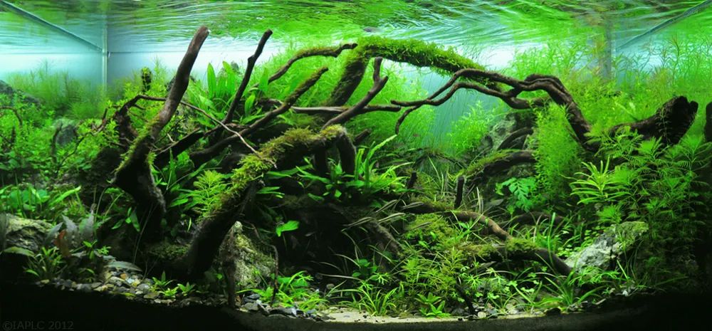
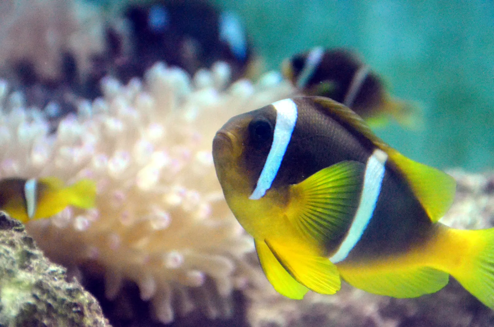

Match aquarium lighting to your plants’ needs
Choose light for the species you keep and where each one sits in the tank. A brighter fixture is not automatically a better match.
Read the storyFresh perspectives for freshwater lovers
and reef keepers. Stories to feed your
curiosity, not just your fish.

Choose light for the species you keep and where each one sits in the tank. A brighter fixture is not automatically a better match.
Read the practical guideSame for freshwater and reef. Keep up your usual testing and water changes too.
The note-taking tip is our own suggestion. This list is for looking, not a full maintenance or health check.
Practical guides, research and conservation news for freshwater and reef tanks.
All stories · 12 stories in this pilot edition
Choose light for the species you keep and where each one sits in the tank. A brighter fixture is not automatically a better match.
Read the storyKeep top-offs and water changes separate, and check the instrument and both water samples before adjusting salinity.
Read the storyClear trapped debris but keep the established biological media, because the parts of a filter do different jobs.
Read the storyUse species and grower guidance to choose a position. Pump output alone doesn't tell you how the water moves at that spot.
Read the storyRemove the growing medium, then follow the species’ planting needs: hairgrass goes into substrate, while Anubias needs an exposed rhizome.
Read the storyCheck identity, eventual size, feeding risks and social behavior before buying a small juvenile.
Read the storyUse the kit's method the same way each time, and keep a record that shows whether a change came from the water or from how you tested.
Read the storyYoung fish need prey of the right size and nutritional value. Hatcheries raise food organisms alongside the fish.
Read the story Earlier researchKeep useful cuttings, thin crowded growth and renew weakened stems instead of repeatedly shortening the same dense patch.
Read the storyThe first transfer carried 130 genotypes, giving the coral gene bank another location for its living collection.
Read the storyThe advantage depended on the conditions: larger groups in clear water could respond more slowly when tightly coordinated.
Read the storyBreeding creates new genetic combinations. Growing fragments multiplies existing stock. Neither guarantees protection from bleaching.
Read the story Earlier research
About 1,000 corals were moved in the first transfer. The project keeps a backup of living coral genetics at a separate ocean site.
Read the conservation storyEvery feature, explainer and practical guide was written for this journal, and the research behind each one sits in quiet endnotes. Older research and evergreen guides are labeled as such, and manufacturer claims are attributed.
Jez237 built this to try out a newsletter page for The Hidden Reef. The photos are illustrative and do not show store inventory or the events in the stories. There is no daily automation, email collection, competitor promotion or stock claim.
Choose light for the species you keep and where each one sits in the tank. A brighter fixture is not automatically a better match.
Before turning up the light, make a plant list: a few leafy accents on wood, an open foreground, or a carpet. Write each plant's requirements beside its name. Choosing equipment is much easier once you know what it has to grow.
Two compact plants can ask quite different things of a tank. Tropica rates Anubias barteri nana as low in light demand and its Eleocharis pusilla 'Mini' as medium. Both can suit a small layout, but they need different light. Go by each plant's care information, not by whether it looks beginner-friendly.
Watts measure electricity use. They do not compare light output across different lamp technologies, a point Tropica's lighting guide makes before offering lumen-per-liter bands as a starting point. Tropica also says those bands grew out of experience with T5 fluorescent lighting, so treat them as a grower's guide. They do not measure what reaches a particular leaf under your LED.
An underwater PAR meter measures the light arriving at a planting position. Its reading, photosynthetic photon flux density, counts the photons in the conventional 400 to 700 nanometer range that arrive per unit of area and time. Apogee's documentation explains that the sensor also has to account for the immersion effect, so waterproofing a sensor is not enough on its own. Use a meter intended or correctly configured for underwater measurements.
We like a small log: plant names, fixture setting, on and off times, and a photo taken from the same spot each time. Write down each change instead of relying on how bright the tank looked last weekend. When comparing settings, change one thing at a time so the record means something.
A modest plan is fine. A few well-chosen plants around a piece of wood can be a finished design in its own right. Choose the aquarium you want to live with, then light it.
Background: Evergreen guide · no publication date shown · November 1, 2026 pilot edition.
Original editorial writing for an independent design preview. Research and reporting dates are preserved above; earlier work is not presented as a new announcement. Product statements are attributed to their manufacturers. No store inventory or endorsement is implied.
Keep top-offs and water changes separate, and check the instrument and both water samples before adjusting salinity.


Evaporation removes water and leaves the salt behind, so the loss is replaced with freshwater. UF/IFAS specifies fresh reverse-osmosis water for the job. A top-off is not a water change. In a water change you remove aquarium water, dissolved salt included, and replace it with prepared saltwater.
Use an instrument intended for seawater and follow its calibration procedure. For the HI98319, a conductivity-based tester, Hanna specifies a fresh calibration standard, rinsing and drying before calibration, clearing trapped bubbles while measuring, and waiting for the stability indicator. Those steps belong to that meter; don't carry another meter's recipe over to yours.
Write down the unit with the reading. The Hanna tester can display ppt, PSU or specific gravity, and a bare number does not say which. We suggest logging the instrument, calibration date, temperature, tank reading and replacement-water reading. If a result is unexpected, check the procedure and repeat the test before deciding what to change.
Red Sea recommends testing both the aquarium and the newly mixed water before a change, and bringing the replacement water to the aquarium's temperature once the salt has dissolved. Mixing and storage timings vary by formulation, so follow the instructions for your salt.
Background: Evergreen guide · November 1, 2026 pilot edition.
Original editorial writing for an independent design preview. Research and reporting dates are preserved above; earlier work is not presented as a new announcement. Product statements are attributed to their manufacturers. No store inventory or endorsement is implied.
Clear trapped debris but keep the established biological media, because the parts of a filter do different jobs.

Cleaning a filter is for removing accumulated waste. The surfaces shouldn't look new afterward, because biological filtration depends on bacteria living on them, turning ammonia into nitrite and then nitrate. Mechanical filtration catches particles. One piece of sponge can do both jobs, so know what you are holding before you throw it away.
Use a bucket kept only for the aquarium. Rinse established media lightly in water removed from the tank instead of untreated chlorinated tap water, and keep soap and detergent away from it. Loosen the clog without stripping the surfaces that hold beneficial bacteria.
Unplug the filter before opening it and follow its manual for access and reassembly, including the basket order. Put the media back and restart the filter once the aquarium is refilled.
Media and equipment differ, so the record won't give you one cleaning deadline for every filter. Servicing the filter doesn't replace partial water changes either. Log them as separate entries so neither job gets lost behind the other.
Background: Evergreen guide · November 1, 2026 pilot edition.
Original editorial writing for an independent design preview. Research and reporting dates are preserved above; earlier work is not presented as a new announcement. Product statements are attributed to their manufacturers. No store inventory or endorsement is implied.
Use species and grower guidance to choose a position. Pump output alone doesn't tell you how the water moves at that spot.

Place a coral by its care requirements and the flow where it will sit, which a tank-wide turnover target can't tell you. EcoTech Marine lists livestock, rockwork, aquarium size, pump placement and other flow sources as factors in choosing a pump mode, which is why we treat a pump specification as only a starting point for placement.
ORA describes its Duncanopsammia axifuga as an LPS coral and recommends moderate-to-strong flow, medium-to-high lighting and a middle-to-upper position. That page is about ORA's own cultured Duncan, with its tightly clustered growth form. It is useful starting information for that stock and says nothing about where every large-polyp coral belongs.
For its Montipora setosa, an SPS coral, ORA lists low-to-moderate flow and bottom-to-middle placement, again with medium-to-high lighting, and describes it as tolerant of a range of conditions. The shorthand “SPS means strongest flow, LPS means weakest” gets both of these named stocks wrong. Ask for the actual coral's care information as well as its broad hobby category.
The record doesn't prove the first placement was right; keep adding to it. If the coral looks unwell, write down what you see and get species-specific help instead of turning the pump up again. This guide gives no universal turnover number and makes no promise that one setting suits every colony.
Background: Evergreen guide · November 1, 2026 pilot edition.
Original editorial writing for an independent design preview. Research and reporting dates are preserved above; earlier work is not presented as a new announcement. Product statements are attributed to their manufacturers. No store inventory or endorsement is implied.
Remove the growing medium, then follow the species’ planting needs: hairgrass goes into substrate, while Anubias needs an exposed rhizome.
Tropica’s 1-2-Grow cups hold young plants meant to be divided into portions before they go into the aquarium.
Read the species label first. Anubias barteri nana and Eleocharis pusilla 'Mini' both come in tissue-culture cups but go to different places: Tropica recommends stone or wood for the Anubias, and the Eleocharis is a foreground carpeting plant. The grower also rates the Eleocharis as medium in light and CO2 demand, against low for the Anubias.
Dennerle Plants says to keep its Plantit cups sealed until you are ready to work. We'd also set out tweezers, a small work surface and the planting plan first, so you aren't hunting for tools with the plant already out of its container.
Ease the plant material out and rinse away the liquid or gel around it. Dennerle specifies lukewarm water and a gentle touch, and Tropica tells users to rinse the medium off under the tap. Follow your cup's own directions. Once the medium is gone, stop; the small plants don't need scrubbing.
For small foreground plants, Tropica suggests six to eight portions planted with tweezers, though that number does not apply to every species. Its Eleocharis guidance calls for small portions spaced across the planting area so the carpet can grow in, rather than one solid plug.
Anubias goes onto suitable stone or wood. Tropica warns against burying its rhizome (the thick stem the plant grows from) because it can rot. Follow the species information here even if the cup's general instructions show tweezers pushing plants into substrate.
If a portion planted in substrate keeps floating up, Dennerle suggests checking whether it is too large and dividing it further. For a new setup, Dennerle recommends planting with little or no water in the tank, then filling slowly without disturbing the substrate. That is setup advice; don't drain an occupied tank to follow it.
Background: Evergreen guide · no publication date shown · November 1, 2026 pilot edition.
Original editorial writing for an independent design preview. Research and reporting dates are preserved above; earlier work is not presented as a new announcement. Product statements are attributed to their manufacturers. No store inventory or endorsement is implied.
Check identity, eventual size, feeding risks and social behavior before buying a small juvenile.
Before buying a marine fish, plan for the adult it will become. Start with the scientific name, the expected adult size and the animals already in your tank. Any question you can't answer yet should stay on paper instead of coming home in a fish bag.
NOAA's account of red lionfish and devil firefish notes that juveniles can measure an inch or less and adults can reach 18 inches. That gap is a reason to research a species before buying, but it gives you no formula for tank volume. Ask an experienced marine keeper to judge whether the dimensions and layout of the tank you have now, not a planned upgrade, suit the adult animal. Lionfish also have venomous spines; they are an example here, not a beginner stocking recommendation.
The blue tang in Florida Museum's profile is Acanthurus coeruleus. The museum reports a length of approximately 12 inches and describes wild individuals living alone, in pairs or in groups, sheltering in reef crevices at night. None of that shows several will share your aquarium successfully, and a photo of a wild school is not a tested captive stocking plan.
Predation is a different compatibility question from chasing. Georgia Aquarium lists small fish, shrimp, crabs and other invertebrates in the red lionfish's diet, describes it as a solitary hunter, and reports that adults defend their home range against other lionfish and other species. So look at which residents could be prey as well as which could be rivals. A quiet fish may still be a danger to smaller tankmates.
Background: Evergreen guide · November 1, 2026 pilot edition.
Original editorial writing for an independent design preview. Research and reporting dates are preserved above; earlier work is not presented as a new announcement. Product statements are attributed to their manufacturers. No store inventory or endorsement is implied.
Use the kit's method the same way each time, and keep a record that shows whether a change came from the water or from how you tested.
Write down the result, its units and what was going on in the aquarium at the time. You can't compare “water fine” with next week's result. A good record shows the measurement and the circumstances, and is honest about how precise a color match can be.
Read the instructions for each test in the kit. API tells users to mix designated reagent bottles vigorously and capped test tubes more gently, and to rinse tubes promptly after testing. Don't assume every bottle is handled the same way, and don't borrow another kit's sequence.
Check expiry information and note when each reagent was opened. Measure the specified sample volume and time every required wait. Read the color with the instructed viewing arrangement in suitable light, because colored aquarium lighting skews the comparison. Contamination, incorrect quantities and reading at the wrong time can all distort the result.
An entry can say “between these two chart colors” instead of inventing an extra decimal place. If you switch kits, note the switch. Tests can use different scale intervals, so two readings won't always line up exactly. When they disagree substantially, check the method before trusting the more reassuring number.
Judge pH against your species' requirements; there is no universal freshwater target. API also warns that ammonia and nitrite matter even at low levels. Look into an unexpected reading promptly. A tidy log is useful evidence, but keeping one is no reason to ignore a possible water-quality problem.
Background: Evergreen guide · November 1, 2026 pilot edition.
Original editorial writing for an independent design preview. Research and reporting dates are preserved above; earlier work is not presented as a new announcement. Product statements are attributed to their manufacturers. No store inventory or endorsement is implied.
Young fish need prey of the right size and nutritional value. Hatcheries raise food organisms alongside the fish.
A breeder can have eggs, clean water and attentive care and still be missing the meal that gets larvae to the next stage. For marine fish larvae, food has to fit a tiny mouth, trigger a hunting response and deliver the right nutrients.
The University of Florida’s February 25, 2025 account of its ornamental-fish research comes back to this problem. UF teams had raised blue tangs in captivity, and that depended partly on learning to grow the live foods the larvae needed at different stages. The university described the goal as methods fish farmers could use, so that each producer would not have to solve the life cycle alone.
Clownfish eggs stick to a surface, which in a breeding system can be a tile or clay pot, and the male tends the nest. The larvae hatch relatively well developed and can take enriched rotifers as their first food. Many pelagic spawners release buoyant eggs instead, and their less-developed larvae need smaller prey, so a routine that works for clownfish does not carry over to every species.
There are exceptions. UF/IFAS notes that damselfishes also lay eggs on surfaces and provide parental care, yet their larvae often need small copepod nauplii. Where a fish lays its eggs doesn't tell a breeder everything about what will hatch; the larva’s capabilities matter as much as the parents’ behavior.
Rotifers can be grown densely, and breeders enrich them to improve their nutritional value. Brine shrimp are convenient to hatch but can be too large for the earliest feeding stage. Copepod nauplii offer a different mix of size, movement and nutrition, though keeping up their supply brings its own culture challenges.
That is why breeding a species once and producing it dependably are separate milestones. UF’s account describes the intensive labor and cost of developing larval diets and environments. A farmer needs a method that works batch after batch, and the research aims to make that stage less precarious.
Captive breeding can offer an alternative to collecting fish, although UF’s account also acknowledges uncertainty about wild harvest’s effects. Our view is to ask for a traceable origin instead of turning that uncertainty into a blanket verdict on every wild fish. Choosing a fish's source is also not the same as protecting its habitat. Valuing a hatchery's work and caring about living reefs go together.
Background: February 25, 2025 · November 1, 2026 pilot edition.
Original editorial writing for an independent design preview. Research and reporting dates are preserved above; earlier work is not presented as a new announcement. Product statements are attributed to their manufacturers. No store inventory or endorsement is implied.
Keep useful cuttings, thin crowded growth and renew weakened stems instead of repeatedly shortening the same dense patch.
On a suitable stem plant, cut the longest shoot just above a lower leaf and replant the cut shoot in the same group; the rooted stem left behind can produce new shoots. Trim in small sessions. Different growth forms need different methods, so one severe haircut for every plant in the tank won't suit them all.
Look below the tips. Repeated trimming encourages branching, but a dense group can leave its lower stems shaded and weak, and shaving the top again won't fix that. Thin out selected stems. Where a stem's lower part has deteriorated, remove it, discard the weakened base and keep the sound upper portion for replanting.
Pick the gap you want to fill before you cut. We suggest a small tray beside the aquarium, with shoots to keep on one side and discards on the other. It makes it easier to finish one group deliberately and avoids an unplanned heap of cuttings.
Put kept shoots where the group is less dense; an already crowded center doesn't need them. For a sloping group, set shorter cuttings toward the front and longer ones behind. Replanting lets you rebuild the shape, so stems don't have to go back where they were.
Photograph the group from the same viewing position before and after. Note which patch you shortened, which you thinned and where the cuttings went. Next time, compare those areas specifically as well as the overall silhouette. Shortening, thinning and replanting are different decisions, and a record keeps you from repeating one out of habit.
Groups don't need matching heights or matching dates on the calendar. Base the next session on the plants in front of you.
Background: Evergreen guide · November 1, 2026 pilot edition.
Original editorial writing for an independent design preview. Research and reporting dates are preserved above; earlier work is not presented as a new announcement. Product statements are attributed to their manufacturers. No store inventory or endorsement is implied.
The first transfer carried 130 genotypes, giving the coral gene bank another location for its living collection.
In its August 20, 2026 announcement, Coral Restoration Foundation reported transferring approximately 1,000 corals representing 130 genotypes from Tavernier Nursery to Elbow Nursery in the Florida Keys. For a gene bank, the second number matters as much as the first. Two dives began a planned relocation of roughly 3,500 corals, intended to duplicate the genetic collection held at Tavernier.
A genotype is a genetic identity, and it is a different count from species. Coral propagation can produce many colonies with the same genotype: a fragment grows into a separate colony without becoming a new genetic individual. A living gene bank is therefore measured in lineages rather than pieces. Sexual reproduction, by contrast, can produce new combinations of parental genes.
The first transfer prioritized founding staghorn and elkhorn genotypes and much of CRF’s Orbicella collection. Elbow gives the bank an ocean-based backup alongside Tavernier, in addition to land-based banking at The Reef Institute. CRF reports stronger water movement at Elbow but does not yet know whether the relocated corals will withstand heat as successfully as some corals already living nearby.
A gene bank and a restored reef are different achievements. NOAA describes genetic storage as a reserve for future restoration, alongside breeding and outplanting. A lineage kept alive can be used later, but that does not establish that a self-sustaining population has returned to the reef.
The August announcement made further transfers dependent on heat and reef conditions, and it did not report all 3,500 corals in place. Maintenance and monitoring follow the move. So far the accomplishment is a second location for vulnerable genetic stock, which is no guarantee against the next bleaching event.
Background: August 20, 2026 · November 1, 2026 pilot edition.
Original editorial writing for an independent design preview. Research and reporting dates are preserved above; earlier work is not presented as a new announcement. Product statements are attributed to their manufacturers. No store inventory or endorsement is implied.
The advantage depended on the conditions: larger groups in clear water could respond more slowly when tightly coordinated.
When fish draw closer together with their bodies pointing the same way, it looks like better teamwork. A University of Bristol study published on September 2, 2026, found that whether that coordination helped depended on the water and the group. The subjects were three-spined sticklebacks, not a mixed community of aquarium fish.
Bristol reports that in cloudy water the fish generally moved closer and aligned more strongly before food appeared, and small groups were especially responsive to nearby fish. Once the feeding opportunity arrived, though, cloudiness still slowed the response overall. Adjusting their behavior did not cancel out the effect of reduced visibility.
The paper measured this from the fishes' positions and orientations in the second before the food stimulus appeared, and from changes in swimming speed between neighbors during the preceding minute. In pairs in turbid water, fish responded to a neighbor's speed changes with less delay than in clear water. That difference was not evident in larger groups.
In small groups in turbid water, closer spacing and stronger alignment were associated with quicker attacks on the food stimulus. In larger groups in clear water, the same features were associated with slower responses. The study treats them separately: cohesion is how tightly the fish gather, polarization how similarly they orient, and a casual glance would bundle both together as schooling.
The reversal is what we find most interesting, since the neatest formation was not always the most effective. It is a reason to watch your own fish more carefully. Clouding a home aquarium or adding fish to reproduce a laboratory result would misread it, and the experiment does not establish a stocking rule or a welfare score for aquarium species.
Background: September 2, 2026 · November 1, 2026 pilot edition.
Original editorial writing for an independent design preview. Research and reporting dates are preserved above; earlier work is not presented as a new announcement. Product statements are attributed to their manufacturers. No store inventory or endorsement is implied.
Breeding creates new genetic combinations. Growing fragments multiplies existing stock. Neither guarantees protection from bleaching.
A fragment can grow into another coral colony without creating another genetic identity. In sexual reproduction, eggs and sperm combine and produce offspring with new combinations of genes. So when a restoration project counts its corals, more colonies and more genetic variety measure different kinds of progress.
Broadcast-spawning corals release eggs and sperm into the water, timed so that gametes from separated colonies can meet; temperature, lunar cycles and light contribute to that coordination. After fertilization, embryos develop into swimming larvae called planulae, and a suitable surface and settlement cues help a larva become an attached polyp. Brooding corals take a different route: fertilization and early development occur inside the parent before larvae are released.
For restoration, producing larvae is only the start. Young corals then have to survive settlement and early growth, a period Miller and colleagues’ 2024 research paper describes as particularly vulnerable to competition, predation and disease. A successful spawning night can supply a new generation, but it cannot by itself deliver a reef of adult colonies.
NOAA’s July 21, 2025 account of Florida restoration describes breeding genetically varied offspring while selecting parents for heat tolerance. Researchers were also testing beneficial algae and bacteria and developing protective hydrogel capsules to support larval settlement. Choosing parents, establishing microbial partners and keeping tiny corals alive are separate problems, and a promising answer to one does not settle the others.
Some field evidence is encouraging, with an important qualification. During the 2023 heatwave, Miller's team surveyed sexually propagated corals across five Caribbean regions and found that many young corals resisted bleaching better than comparison colonies. The study was observational, though, with uneven comparisons across species and sites, and it did not establish the mechanism responsible. An older cohort of sexually propagated elkhorn corals suffered badly, and the authors warned that the resistance seen in juveniles could diminish with age. Sexual origin alone is not evidence of lifelong heat protection.
NOAA’s program still includes growing fragments from bleaching survivors. Fragmentation can multiply existing stock and breeding can generate new genetic combinations, but neither makes environmental conditions irrelevant. The 2024 study explicitly presents restoration as work that goes alongside addressing warming and local pollution, not a substitute for it.
Background: July 21, 2025 · November 1, 2026 pilot edition.
Original editorial writing for an independent design preview. Research and reporting dates are preserved above; earlier work is not presented as a new announcement. Product statements are attributed to their manufacturers. No store inventory or endorsement is implied.